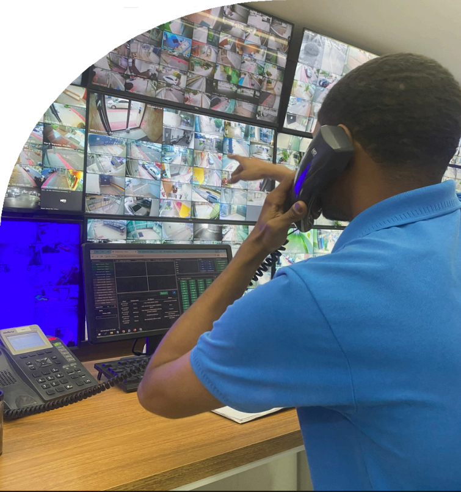

Portaria virtual,
segurança
e tecnologia para condomínios.
Monitoramento 24 horas, controle de acesso e atendimento remoto para condomínios.

Sobre a Tattica
A TATTICA atua em portaria virtual com monitoramento, controle de acesso e atenção remota para condomínios e empreendimentos do Espírito Santo.
A operação combina tecnologia, equipe especializada e rotina estruturada para dar suporte ao atendimento e à segurança do condomínio.
- Monitoramento de acessos e áreas comuns.
- Controle de entrada e saída de moradores, visitantes e prestadores.
- Atendimento remoto com apoio tecnológico.
- Equipe especializada em operação e rotina de segurança.
Central Operacional TATTICA
Tecnologia integrada à operação
Aplicativo, sistema, controle de acesso e central de monitoramento funcionam de forma integrada para apoiar a operação da portaria virtual.
Vantagens da operação
A TATTICA oferece uma rotina de portaria virtual com atenção, controle e suporte técnico para o condomínio.
Monitoramento 24h
Central de atendimento e acompanhamento dos acessos durante todo o dia.
Redução de custos
Alternativa à portaria física tradicional, com possibilidade de redução dos custos operacionais.
Controle de acesso
Gestão das entradas e saídas de moradores, visitantes e prestadores.
Infraestrutura
Rede, energia de apoio e equipamentos que sustentam a operação.
Apoio operacional
Atendimento e suporte para situações do dia a dia do condomínio.
Identificação
Recursos de identificação para apoio ao controle de acesso e à rotina de segurança.
Como funciona
A rotina da portaria virtual é simples, direta e acompanhada por nossa central.
Entrada do visitante
O visitante aciona a central pelo interfone.
Identificação
O operador realiza o atendimento e identifica o visitante.
Contato com o morador
A central entra em contato com o morador.
Autorização
O morador confirma ou não a entrada.
Liberação
O acesso é liberado remotamente.
Registro
A operação fica registrada no sistema.
Infraestrutura e Servidores NVMS
Tecnologia para uma operação mais segura
A tecnologia faz parte da nossa operação. A TATTICA utiliza sistemas de monitoramento, controle de acesso e infraestrutura integrada para acompanhar o condomínio e auxiliar nossa equipe no atendimento.
- Monitoramento: câmeras e sistemas de gerenciamento para acompanhamento dos acessos e áreas comuns.
- Controle de acesso: soluções para gestão de entradas e saídas do condomínio.
- Identificação: reconhecimento facial e outros recursos de identificação, conforme a estrutura instalada.
- Infraestrutura: rede, energia de backup e equipamentos que dão suporte à operação.
Tattica Center
Recursos para facilitar o dia a dia do morador.
O aplicativo permite acompanhar acessos, autorizar visitantes, visualizar câmeras e utilizar recursos de controle de acesso.
Chaves Virtuais
Crie QR Codes temporários para convidados.
Câmeras ao Vivo
Visualize as áreas comuns em tempo real.
Liberação Remota
Abra portões pelo celular de onde estiver.
Segurança com tecnologia e operação
A tecnologia é integrada ao trabalho da central e da equipe para apoiar o monitoramento e o controle de acesso do condomínio.
Monitoramento 24h
Controle de Acesso
Infraestrutura
Equipe Especializada
Apoio de Rondas
Redundância
Perguntas Frequentes
O que é portaria virtual?
É a operação remota de acesso e monitoramento de um condomínio, com atendimento por uma central e apoio de sistemas de controle e comunicação.
A portaria funciona 24 horas?
Sim. A central acompanha os acessos e as ocorrências durante o dia todo.
Como o visitante entra no condomínio?
O visitante aciona a central pelo interfone e o operador realiza o atendimento e identifica a solicitação.
Existe contato com o morador?
Em geral, a central entra em contato com o morador ou responsável para confirmar a entrada.
Como funciona em caso de falta de energia?
A infraestrutura da operação conta com suporte técnico e recursos de contingência para manter a rotina funcionando com o menor impacto possível.
É possível utilizar as câmeras que o condomínio já tem?
Em muitos casos, sim. A infraestrutura existente pode ser avaliada para verificar a compatibilidade com a operação.
O condomínio pode acessar as câmeras?
Sim. O acesso às câmeras e aos registros é parte do acompanhamento da operação e pode ser disponibilizado conforme a estrutura do condomínio.
Conheça a portaria virtual da Tattica.
Fale com nossa equipe e saiba como funciona a solução para o seu condomínio.
Fale com a TATTICA
Nossa equipe pode conversar sobre a operação do seu condomínio.
-
Telefone Fixo (27) 3026-2196
-
WhatsApp (27) 99759-9938
-
Endereço Sede Rua Ulisses Sarmento, 24
Praia do Suá, Vitória - ES